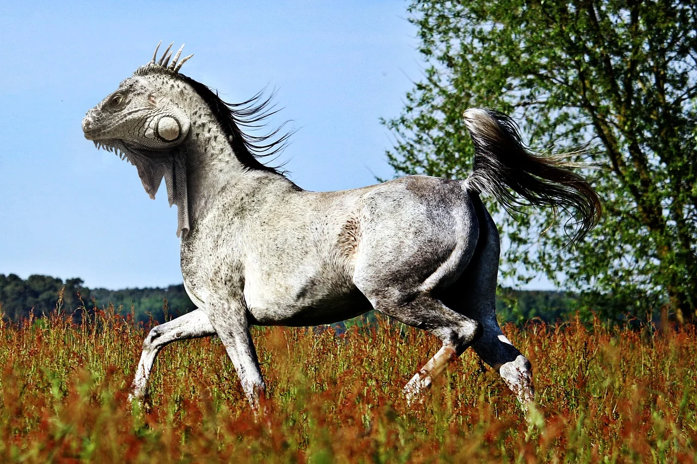
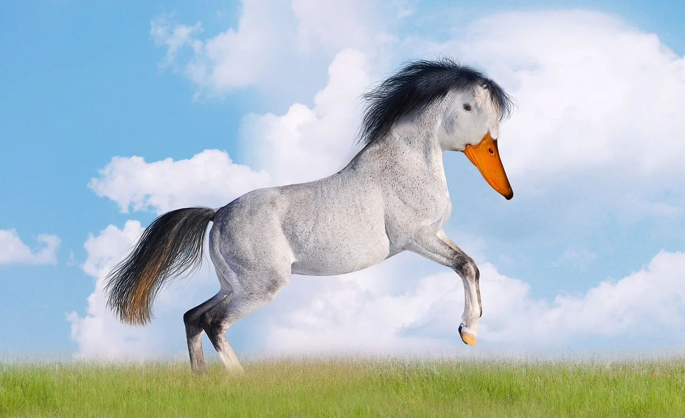
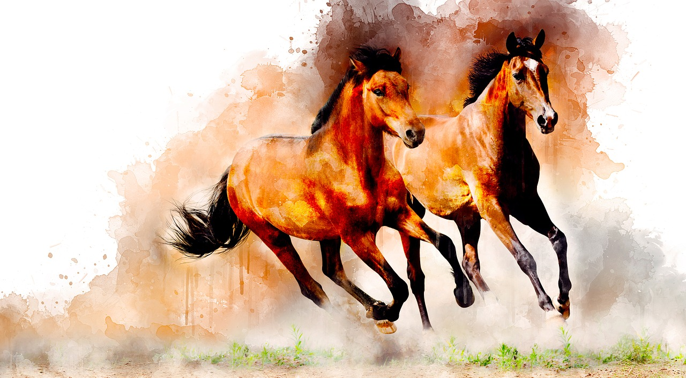
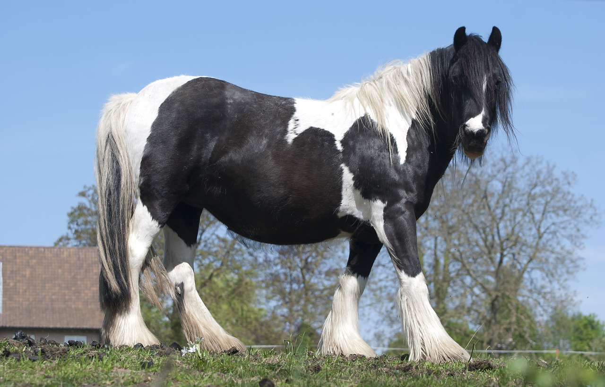
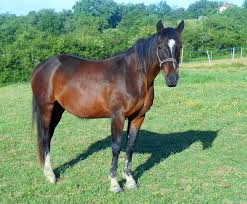

By Jorge Gonzalo Galindo Almena para Diseño de Interfaces Web

Raro avistamiento de un caballo-lagarto, se cree que están extintos
Fue encontrado cerca de una central nuclear en algún lugar de Europa.

Raro avistamiento de un caballo-pato, se cree que están extintos
Fue encontrado cerca de una central nuclear en algún lugar de Europa.

Imagen de caballo 3

Imagen de caballo 4

Imagen de caballo 5
Escrito por: Jorge Gonzalo Galindo Almena
Correo: jorgegga.almeria@gmail.com
Almeria, Calle Pio Baroja
España